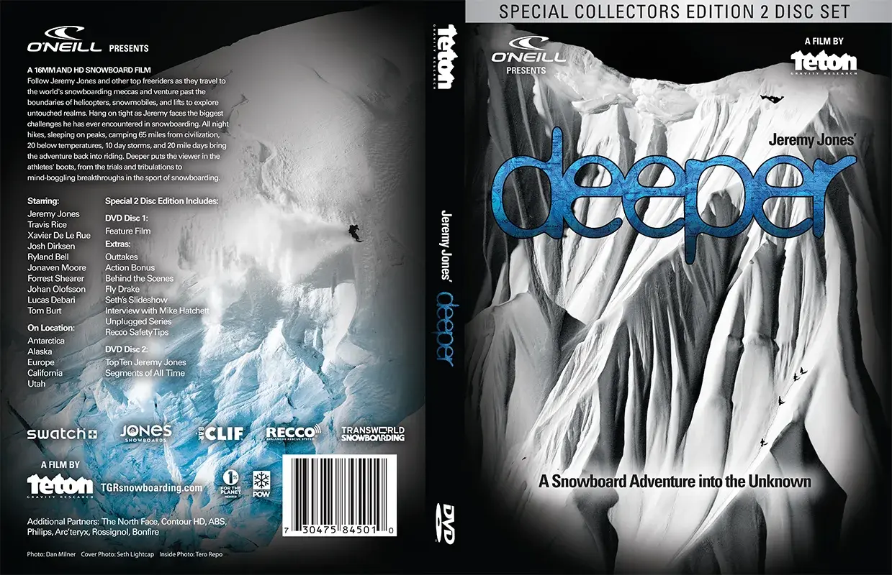

Dunn Creative · Jackson Hole, Wyoming
Brand development, digital experiences and creative built to perform.
Dunn Creative partners with brands to shape distinctive identities and build digital experiences that perform. Every project is led by a senior creative director, with an AI studio doing the heavy lifting.

Teton Gravity Research · Film campaign
Jeremy Jones' Deeper
Packaging, poster, ads and DVD menu for TGR's snowboard film Deeper.
View project + AI-directed mockup
AI-directed mockupBrand identity
Ironwood Homes
Brand identity for a custom home builder serving Star Valley, Wyoming.
View project +
Website
Peace Park
Website for an annual gathering of the world's best snowboarders.
View project +What we do
Hover a discipline to see the work behind it.
Brand identity
Build a brand with clarity, character and consistency.Logo suite, Brand guidelines
Websites
Digital experiences designed to look better and work harder.UX, Design
Campaigns & content
Give the brand a voice, a visual language and something worth sharing.Ads, Social
Decks & presentations
Clarify the story when the stakes are high.Investor, SalesPrint & packaging
Extend the brand beyond the screen, with the same care as digital.Packaging, Merch
AI for creative teams
Practical AI for creative and marketing teams: strategy, training and workflows.Workflow audits, Training
What we believe
Good creative should do two things at once: strengthen how a brand is seen, and improve how it performs.
01
Brand-led thinking
Built around identity, experience and execution.
02
Digital-first execution
Designed for modern marketing and how people find you online.
03
Cross-channel capability
From web and content to print, packaging and campaigns.
Ways to start
Free audit
A senior look at your brand, site or workflow, with a short list of what to fix first.
Project
A defined scope with a fixed quote: a brand, a site, a campaign or a deck.
Retainer
A standing creative team for ongoing work, directed by Chris.

Every project is directed by
Christopher Dunn
20+ years in creative direction, brand, web and content, most of it in action sports, film and lifestyle, where the work has to look as good as the footage. Senior creative roles at Teton Gravity Research; film campaign credits on We Are Blood, The Fourth Phase and View From A Blue Moon.